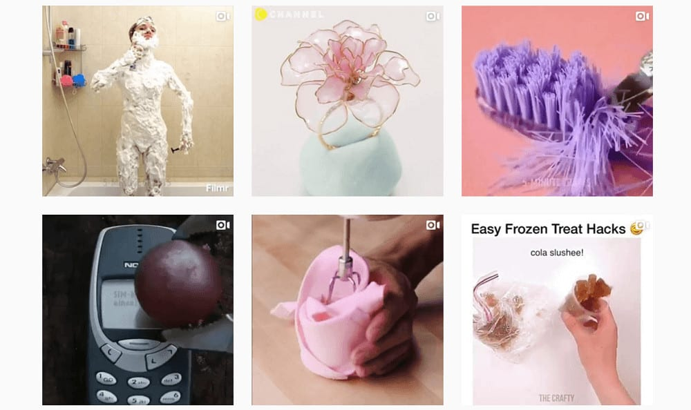
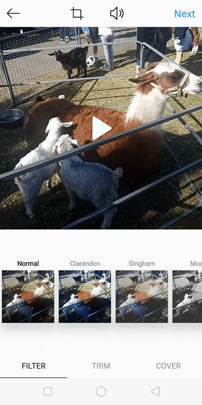

When it comes to successful video content, Instagram tutorials are often a popular go-to. These posts have raked in the views for multiple brands and influencers on the platform; making the guaranteed hits among users – when done right, that is.
What are Instagram Tutorials?
Ever gone through a hashtag page, or browsed through the Explore feed to find quick, fast-paced videos that show you how to perform, create, or achieve a specific thing? Congratulations – you’ve stumbled upon an Instagram tutorial.

Instagram tutorials are exactly as their label describes them: videos that teach the viewer how to do something. These clips are often presented in a timelapse, taking the user through the detailed stages of achieving a goal with fast-forwarded scenes.
Such videos also typically come with overlayed text that provide instructions. Often, voiceovers or dialogue aren’t necessary to understand these videos – the steps provided are still easy to follow, with or without audio.
Why are Instagram Tutorials Popular?
Instagram tutorials are popular for a number of reasons. For one thing (and probably the most prominent reason), users enjoy finding content that benefits them. While attractive photos of sceneries or people are engaging all the same; tutorials have the added bonus of leaving the viewer with new, practical knowledge on how to achieve something.
Courtesy of lalasupdos (Instagram account).
Instagram tutorials thus perform as answers or how-to’s to common problems, giving users all the more reason to watch them. They give offer intellectual value to viewer – and for free.
Additionally, video content has been known to offer at least 38% more engagement than standard image posts. Couple this with their beneficial nature, and you’ve got a recipe for Instagram engagement.
Types of Instagram Tutorials
Below, we describe some of the most popular types of Instagram tutorials. and the common practices for each.
While such content can virtually be about anything – these niches have proven to be the most common, and profitable, on the platform.
Beauty Tutorials
Beauty tutorials commonly come in the form of hairstyle, make-up, and skincare how-to’s. You’ll often find these videos zoomed into a subject’s face or head as they perform a specific beauty routine.
Makeup tutorials, for example, will zoom into the artist’s eye, lips, or entire face as they apply their products. Each cosmetic used will have their own close-up in the video, showcasing their features.
Courtesy of ling.kt (Instagram account).
This specific tutorial is ideal for affliate marketers, allowing you to incorporate the classic principle of “show, don’t tell”. You’ll not only get to advertise your sponsored brands, but show just how good their products can be.
As with most tutorials, these videos are often timelapsed, showing a quick “before and after” process of a particular beauty routine.
Their magnified format is also extra helpful in showing viewers the clear, detailed steps of achieving a certain look or effect. You get to see the entire process unfold as if the person’s right in front of you.
Meal Tutorials
Another favorite type of Instagram tutorial are those that show you how to cook or bake a dish, step-by-step.
These videos revel in making a meal look as decadent as possible; offering plenty of close-up shots and swirling pans that tempt the viewer’s senses.
Courtesy of tasty.one (Instagram account).
The video will then delve into a fast-forwarded process on how to make the specific dish. Typically used in these tutorials are overhead shots of the user’s tools and equipment at work. Bright, poppy used music is commonly used in the background for a light, upbeat feel.
Often, users will add text to the video outlining instructions or required ingredients. As such, these tutorials are generally some of the easiest to replicate, resulting in high “sharing” value.
Courtesy of foodyfixation (Instagram account).
Crafting Tutorials
Crafting tutorials are similar to meal and food tutorials; in that they offer birds-eye shots of the user at work. Such videos cover a wide range of crafts – from making little homemade projects, to sewing outfits, to woodwork.
Courtesy of woodschoolmaine (Instagram account).
While many of these take on the usual “timelapse” form, the more technical niches may opt for more in-depth explanations. For example, the profile “@woodschoolmaine” reveals some woodworking techniques in a recent video, with an actual instructor explaining his methods in real-time.
Courtesy of leilainspire (Instagram account).
Or, users may simply edit their tutorials with quick jump-cuts, allowing each stage to play at normal speed. This allows the viewer to fully absorb the detail of certain techniques, which may get lost in a timelapse effect.
“Life Hack” Tutorials
Though a much more niche (and oftentimes, strange) sub-genre of Instagram tutorials, “life hack” videos can also generate plenty of engagement.
Like most tutorials, “life hacks” are delivered with fast-paced editing and upbeat music to keep viewers engaged. Many also draw users in strange thumbnails – often having no relation to the actual content.

As such, the often absurd nature of these videos spell a love-hate relationship with the majority of Instagram users. If that’s just the kind of content you’re going for, however, these “tutorials” are nonetheless entertaining.
A common trope among “life hack” videos are the mini skits presented before the actual tutorial begins. These clips thus play out similarly to a cliche infomercial; where a character faces an overblown problem, followed by a quick “life hack” (often involving some homemade crafting) to address their issues.
Courtesy of craftstricks (Instagram account).
They’re a polarizing type of Instagram tutorial – but are bound to get viewers reacting in the comments.
Fashion Tutorials
Finally, we’ve got fashion tutorials. These video guides are similar to that of beauty tutorials – that they help you achieve a specific appearance – though involve less close-ups and more full-body shots.
Courtesy of fashionacy (Instagram account).
Fashion tutorials teach viewers how to style an accessory or clothing piece; or present fully-modelled outfit ideas. They take on the typical timelapse effect to provide more tips in the 60-second time frame.
Courtesy of krr_girlsfashions (Instagram account).
Like most Instagram tutorials, these videos are filled with upbeat music and require no voice-overs or audible explanations. Information is provided visually and clear enough for viewers to follow. Good camera presence may be needed for these types of videos, as you’ll likely be modelling full-body styles and clothing.
How to Make Your Own Instagram Tutorial
Now that we’ve outlined some of the platforms most popular tutorial genres, ready to make one of your own?
Our steps below takes some of the best-performing characteristics of successful Instagram tutorials. Implement them in yours, and you’ll be well on your way to a hit.
Have a Creative Concept
As absurd and unnecessary as they seem to be – “life hack” tutorials gain plenty of traction for one element above the rest: they’re unique. While not always being the “good” kind of unique, they still stand out nonetheless with their often out-of-the-box ideas.
Courtesy of p_kosowska (Instagram account).
Creating a good Instagram tutorial thus requires you to get creative. What’s a “how-to” that hasn’t been approached yet? Look into the common issues your target audiences faces, and create the steps to solve a specific problem. Once you’ve got your idea down, it’s time to film.
Film Your Tutorial With a High Quality Camera
You needn’t go all out on equipment to film a high-quality video; but make sure your tutorial is clear, well-lit, and generally easy to view. Viewers won’t latch onto an Instagram tutorial that’s blurry or pixelated. Ensure your camera or smartphone is able to capture each and every step of your guide.
Ensure Good Lighting
Natural lighting always works best. However, if you need to, make sure you’ve got enough artificial light in place. Make-up artists commonly use a ring light when filming their tutorials. If you’re lucky enough to own studio-professional lights, use those! Otherwise, lamps and flourescent lights should work just as well.
Another common tip for good lighting is ensuring your subject isn’t backlit. This a top rule in both filming and photography. If you’re light source comes in from behind your subject, they’re going to appear dark and indiscernable. Aim to have it shine in front of you, or at an angle that appears flattering.
Of course, don’t forget the power of post-editing. If all else fails, you can always use video editing software to raise the brightness or exposure levels of your clip.
Know Your Angles
Most of the popular tutorial videos we’ve discussed involve a specific framing style or angle. Beauty tutorials, for example, often close up on the subject’s facial features at an eye-level.
Courtesy of zahraakhxn (Instagram account).
Meal tutorials, in contrast, are usually shot at bird’s-eye view. These different styles of composition are made to enhance the video experience. Those who wish to make a meal can follow instructions better with a wide, top-view of the process. Makeup fans, on the other hand, can absorb techniques and details better with a zoomed-in view of the user’s application.
Determine the specific angles and framework that can make your tutorial more informative. Close-ups are generally better for a detailed view of technical methods; while wide shots offer a full look of all the tools and elements at play.
Edit Your Video
Here comes the fun part: editing your video!
This stage is where you cut out all the unnecessary fat, making your video as short, snappy as possible – while still retaining all the necessary information. Users generally add their timelapse effect at this stage, or implement jump cuts to fit the 60-second time constraint.
Use Bold Text
Often used to instantly attract viewers, bold text helps users understand your video without the need for audio.
Short, bold text can be used to provide instruction for specific scenes. This omits the need for a voiceover; and will surely grab attention when your video is autoplayed.
Courtesy of yuby (Instagram account).
Other times, users will place bold text on the upper and lower sections of their video. These are typically used to caption or add a “relatable” description for memes or funny videos.
Courtesy of soulvibesco (Instagram account).
Add Effects or Filters
Overlaying a filter effect (or even special effects!) can give your tutorial that quick “oomph” it needs. However, don’t overdo this – you’d want to your video to remain as clear and easy-to-understand as possible.
With Instagram tutorials, simplicity is best. Effects can liven up your video, though your primary purpose is to instruct the viewer and provide valuable information. Overwhelming transitions can easily make your video appear excessive and messy.

While filters can be added through editing software, Instagram also offers a generous collection of built-in filters to choose from. Simply choose the type that fits your aesthetic best, adjust its opacity, and you’re good to go. (At this stage, you can also trim and choose your video cover before posting).
Use Appropriate Music
This one goes without saying – but using the right music is essential for a positive viewing experience. This is why most Instagram tutorials opt for energetic, cheerful melodies, as they’re more likely to get people watching. Music that’s too harsh or melancholic can quickly turn off viewers, so choose your backing tracks well.
It may also be best to stick to stock music. This helps you avoid any copyright issues with licensed tracks.
Include a Call-To-Action
Finally, don’t forget to include a quick call-to-action statement in your final frame.
Courtesy of crafty.life_hacks (Instagram account).
This could involve plugging your other social media profiles, or simply asking your viewer to follow your account for more similarly helpful videos.
Add a Clever Caption and Use the Right Hashtags
The final stage of creating your tutorial involves adding a clear, clever description, and using the appropriate hashtags.
Users may simply include an additional call-to-action statement in the caption, directing viewers to their profile or other social media.
Courtesy of emma.diy.crafts (Instagram account).
Other times, users will use their caption to entice the viewer, stating the tutorial’s intention and how it can help.
Courtesy of chiutips (Instagram account).
Affiliate marketers will often use this description to tag their brand and leave a brief review. As mentioned earlier, pairing this with a quick tutorial video is sure to give the product that extra, promotional boost.
Courtesy of paulawwolf (Instagram account).
Of course, you’ll want your tutorial to be visible among potential viewers – so don’t forget to tag the right community pages.
Create Your First Instagram Tutorial Today!
Instagram tutorials are an engaging, valuable, and easily consumable type of online content, so it’s no wonder they rake in the likes and views. Now that you know all the tips and tricks, why not start incorporating them in your feed? You may just help the right person, and gain a follow in return.
You May Also Like: